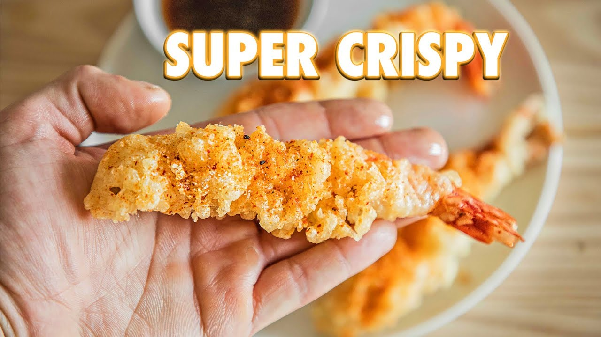

Shrimp Tempura

Making homemade shrimp tempura doesn't require a lot of fancy ingredients or gadgets. Just some good shrimp, some water, some flour, ...
Ingredients:
Tempura Batter:
- 1 cup (150g) all purpose flour
- 1/4 tsp baking soda
- 1 cup (236ml) cold carbonated water
- 2-4 ice cubes
- 1 egg
Tempura Sauce:
- 1 cup (236ml) water
- 2 - 3inch pieces kombu (5g)
- 1/2 cup (5g) bonito flakes
- 1/4 cup (60ml) soy sauce
- 1/4 cup (60ml) mirin
Recipe
- In a medium sized bowl, crack one whole egg and whisk until broken up and homogenized. While whisking, stream in 1 cup of cold carbonated water. Drop in 3-4 ice cubes to keep the batter cold.
- In a separate bowl, add a ¼ teaspoon of baking soda and 1 cup of all-purpose flour. Give a nice mix until everything is evenly incorporated.
- Sift your flour mixture directly into your egg mixture. Using chopsticks, mix until it starts to come together.
- For your shrimp, make sure they are peeled and deveined. If not, cut a line down the top of them to pull the vein out. Grab the shell and peel it right off. Use the back part of your knife to lightly scrape the tail piece of each shrimp to remove the dirt.
- To make you’re shrimp straight, make tiny scores along the length of the underbelly. Make sure to not go too deep. Repeat this on the other side. Lightly squeeze and gently pull it apart to have it straighten out. Repeat this with your remaining shrimp.
- To fry, start by filling a medium sized heavy-bottomed pot a little above halfway with oil. Insert a frying/candy thermometer into your oil, and heat your oil up to 350 degrees Fahrenheit.
- Once your oil reaches that temperature, dredge your shrimp in all-purpose flour and then dip it in the batter making sure it’s totally covered.
- Gently lower the shrimp into the hot oil, while making a swirling motion. This will help keep the shrimp straight.
- Using a stock skimmer, clean out the flakes in your oil to avoid overcrowding. Repeat this process until you’ve fried all of your shrimp.
- Season your shrimp with a bit of togashi and serve with your dipping sauce.
- To make your sauce, pour one cup of water in a small sauce pot. Add in two pieces of kombu - 3 inches each. Bring up to a steamy heat and let it steep for 12 minutes. Once that time is up, remove and discard the kombu.
- Add in ½ a cup of bonito flakes and keep your pot at a steamy heat for 8 minutes. Strain through a mesh strainer and add in ¼ cup of soy sauce, and ¼ cup of mirin. Mix and serve with your shrimp.